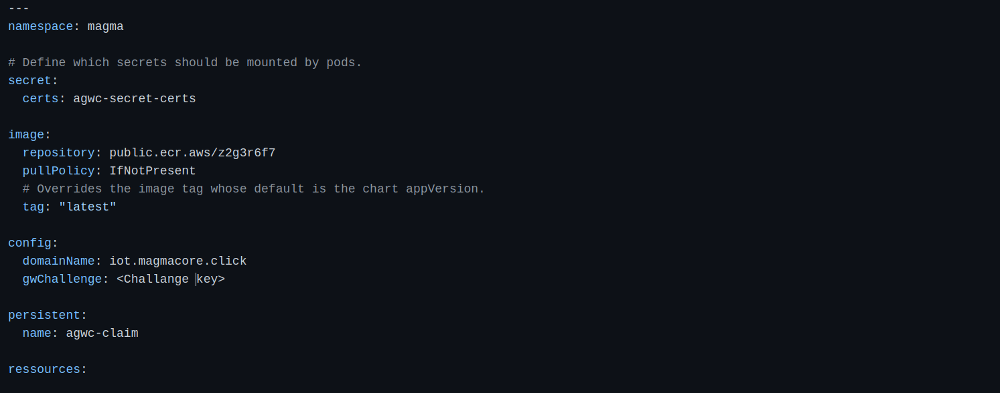
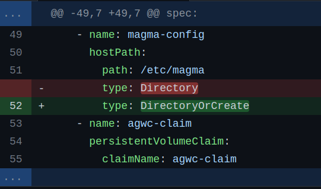
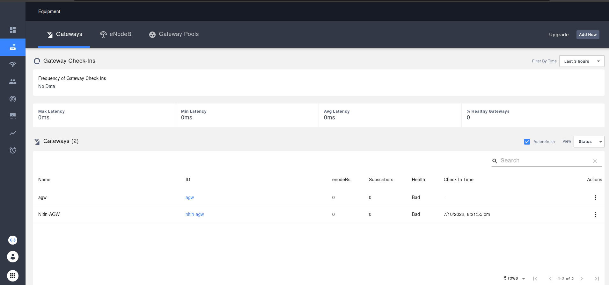
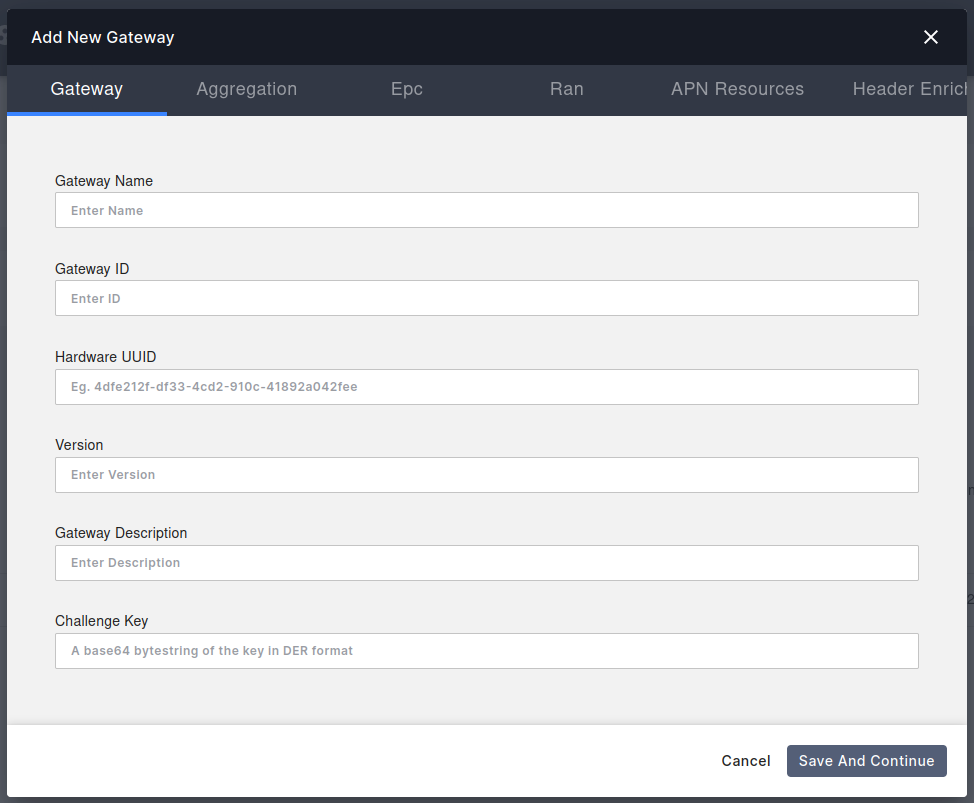
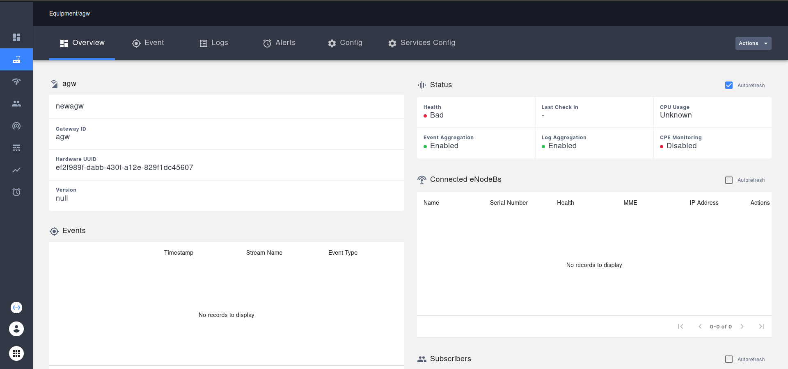

Install AGW Helm¶
Install Access Gateway on Ubuntu (Bare Metal)¶
Note
AGW Helm charts are currently in experimental state, therefore sometimes there are some issues in integrating it with orc8r.
Prerequisites¶
To setup a Magma Access Gateway, you will need a machine that satisfies the following requirements:
64bit-X86 machine with ubuntu 20.
2 ethernet ports.
8 Gb Ram.
4 Core CPU.
Deployment¶
1. Docker¶
Download the offical script to install and setup docker on ubuntu.
wget https://raw.githubusercontent.com/magma/magma/master/lte/gateway/deploy/agw_install_docker.sh
Make some changes in the script
sed -i "113 a\sed -i 's/debian/debian-test/' /opt/magma/lte/gateway/deploy/roles/magma_deploy/vars/all.yaml\n\
sed -i 's/focal-1.7.0/focal-ci/' /opt/magma/lte/gateway/deploy/roles/magma_deploy/vars/all.yaml\n\
" "agw_install_docker.sh"
Execute the script
./agw_install_docker.sh
This script will automatically setup docker and configure related things and restart machine.
2. Create a K8s Cluster¶
we’ll only install the required components from this ansible-playbook.
Clone repo on your local machine(Not AGW machine).
git clone https://github.com/ShubhamTatvamasi/magma-galaxy.git && cd magma-galaxy
Make changes to deploy-orc8r.yml file.
{kind=link}
Make changes to hosts.yml file acc to your AGW host machine.
Copy ssh id to remote machine(Agw) to have passwordless ssh.
ssh-copy-id <Hostname>@<ip-address>
Run playbook.
ansible-playbook config-orc8r.yml
This playbook will take around 10 min to complete.
3. Deploy AGW¶
Files required
rootCA.pemcertificate file from orc8r.
place this file on the required location.
sudo mkdir -p /var/opt/magma/certs/
sudo cp rootCA.pem /var/opt/magma/certs/
gwChallenge.keykey file.
To generate it.
cd /var/opt/magma/certs
# Generate Private key
sudo openssl ecparam -name secp384r1 -genkey -noout -out gw_challenge.key
sudo chmod 644 gw_challenge.key
# Generate Public key
openssl ec -in gw_challenge.key -pubout -out gw_challenge.pem
GW_CHALLENGE=$(cat gw_challenge.pem | sed '5d' | sed '1d' | tr -d '\n')
echo ${GW_CHALLENGE}
snowflakefile that contains the uuid.
To generate this.
sudo uuidgen > /etc/snowflake
Make changes to hosts file
open /etc/hosts in edit mode and Add the following lines in the file
replace 192.168.100.102 with your orc8r address.
Verify the sanity of rootCA.pem file
openssl x509 -text -noout -in /var/opt/magma/certs/rootCA.pem
Create /var/opt/magma/configs/control_proxy.yml with your orc8r/controller details
sudo mkdir -p /var/opt/magma/configs/
sudo vim /var/opt/magma/configs/control_proxy.yml
Insert the following lines.
Verify connectivity between AGW and Orc8r
telnet bootstrapper-controller.<Orc8rDomainName>.com 443
Will return this:
Pull Docker images.
docker pull public.ecr.aws/z2g3r6f7/agw_gateway_python:latest
and
docker pull public.ecr.aws/z2g3r6f7/agw_gateway_c:latest
Clone Magma repo and go to docker directory
git clone https://github.com/magma/magma.git && cd magma/lte/gateway/docker/
Start docker containers
docker-compose up
Let’s check the docker containers
docker ps | grep agw
Every container is in healthy condition. Now, let’s delete them
docker-compose down
Go to helm directory
cd ../deploy/agwc-helm-charts/
Edit values.yaml file
{kind=link}
Edit agwc-config.pod.yaml file.
nano templates/agwc-config.pod.yaml
and change hostPath type from Directory to DirectoryOrCreate
{kind=link}
Create magma namespace
kubectl create namespace magma
Create rootca certificate secret needed to communicate with orc8r
kubectl create secret generic agwc-secret-certs --from-file=rootCA.pem=rootCA.pem --namespace magma
make sure to execute this command on the directory where rootCA.pem file is present.
Deploy an AGW after updating values.yaml
cd lte/gateway/deploy/agwc-helm-charts
helm --debug install agwc --namespace magma . --values=values.yaml
Make sure all pods are in running state.
kubectl get pods -n magma
{kind=link}
Now lets connect the orc8r with AGW. Open your orc8r dashboard and go to Equipment section.
{kind=link}
Add a new AGW By entering the following details.
{kind=link}
AGW added successfully.
{kind=link}
Health will come to healthy state when the connection will be successful and agw service will synchronize themself.